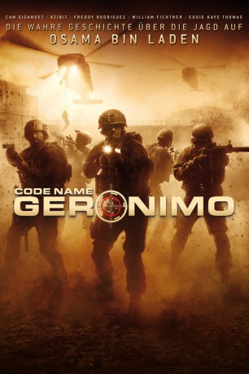

#9517 Code Name: Geronimo
Alternativ: Seal Team Six: The Raid on Osama Bin Laden
 
 IMDB-Wertung: 5.7 / 10
IMDB-Wertung: 5.7 / 10  Tomatometer: 36
Tomatometer: 36  Metascore: 0
Metascore: 0 
Zehn Jahre nach den verheerenden Terroranschlägen vom 11. September 2001 bereitet die CIA im April des Jahres 2011 in militärischen Trainingslagern eine Geheimoperation vor. Bereits seit Monaten laufen die Vorbereitungen auf die Mission in Form von Überwachungsaktionen und Ablenkungsmanövern in Pakistan. Doch nun kann die Operation endlich starten: Ein kleines Team bestehend aus der absoluten Elite der US-Navy-Seals soll das Geheimversteck Osama bin Ladens stürmen und den Anführer der Terroristen-Gruppe der Taliban unschädlich machen. Bin Laden ist der meistgesuchte Terrorist der Welt, seit er im Jahr 2001 für den Tod von mehr als 4000 Menschen und die Verwüstung von New York verantwortlich war. Eine der spektakulärsten Missionen in der Geschichte der Menschheit beginnt, an deren Ende der Tod des Terroristenführers stehen soll.
Jahr: 2012
Dauer: 100 Minuten
FSK: 12
Land: USA Studio: National Geographic ChannelTonspuren: DTS - ,
Untertitel: Deutsch,
Auflösung: 1080p (1920x1040) Größe: 6072 MB
Genre: Action, Thriller, Drama, Krimi
Regisseur:  John Stockwell, Paulette Victor-Lifton
John Stockwell, Paulette Victor-Lifton
Drehbuch: Kendall Lampkin
Soundtrack: Paul Haslinger
Darsteller:
 Cam Gigandet als Stunner
Cam Gigandet als Stunner Anson Mount als Cherry
Anson Mount als Cherry Freddy Rodríguez als Trench
Freddy Rodríguez als Trench Xzibit als Mule
Xzibit als Mule Kathleen Robertson als Vivian
Kathleen Robertson als Vivian Robert Knepper als Lieutenant Commander
Robert Knepper als Lieutenant Commander Eddie Kaye Thomas als Christian
Eddie Kaye Thomas als Christian Kenneth Miller als Sauce
Kenneth Miller als Sauce William Fichtner als Mr. Guidry
William Fichtner als Mr. Guidry Jenny Gabrielle als Tricia
Jenny Gabrielle als Tricia Mo Gallini als Interrogator
Mo Gallini als Interrogator- Suhail Aldabbach als Arab Man
 Tait Fletcher als D-Punch
Tait Fletcher als D-Punch Sarah Minnich als Waitress
Sarah Minnich als Waitress Kristen DeVore Rakes als CIA Analyst
Kristen DeVore Rakes als CIA Analyst Alma Sisneros als Trench's Girlfriend
Alma Sisneros als Trench's Girlfriend- Keith Meriweather als TOC Commander
 Lora Martinez-Cunningham als TOC Tech Torres
Lora Martinez-Cunningham als TOC Tech Torres- Ashima Bhalla als Sania (uncredited)
 Steven Ray Byrd als Navy Seal Soldier (uncredited)
Steven Ray Byrd als Navy Seal Soldier (uncredited)- Harsh Chhaya als Dr. Afridi (uncredited)
- Bill Perkins als Sniper (uncredited)
 Jaime Powers als Cafe Patron (uncredited)
Jaime Powers als Cafe Patron (uncredited)- Jy Prishkulnik als Daughter of Osama Bin Laden (uncredited)
- Brenden Wedner als Navy Seal Soldier (uncredited)
 David House als TOC Tech
David House als TOC Tech- Saleem Watley als Al-Kuwaiti
- Yon Kempton als Bin Laden
- Jahan Khalili als Kalid
- Alyssa Sprunk als Administrative Girl
- Deborah Vigil als Girl Attacked by Dog
- Ghasak Dabbach als Al-Kuwaiti's Wife
- Leonard Claps als Abrar
- Hani Yahya als Hamza
- Rafaella Mark als Farah
- Sarah Al Jabouri als Tibah
- Krista Davis als Mule's Wife
- Nathaniel Joiner als Mule's Father
- Nancy Smith als Cherry's Mom
- Sprocket als Stunner's Dog 'Sprocket'
- Tracy Lindsay als Vest Dog 'Cairo'
- Erik Beacham als CIA Agent (uncredited)
- Vernon Bradley als CIA Analyst (uncredited)
- Joe Cabezuela als Navy Seal Soldier (uncredited)
- Amanda Fresquez als Field Agent (uncredited)
- Jessica Stotz Harrell als CIA Agent (uncredited)
 Timothy Holmes als Navy Seal (uncredited)
Timothy Holmes als Navy Seal (uncredited)- Gregory Leiker als Helicopter Air Crewman (uncredited)
- Betzy Miesen als CIA Agent (uncredited)
- Seth Mossman als CIA Analyst (uncredited)
Datei: X:\2012(A-F)\Code Name Geronimo (2012, FSK12, 1920x1040).mkv seit 06.09.2018
Festplatte: HD 2012(A-M)
 Es gibt insgesamt 102 Filme in der Gruppe '2012(A-F)'
Es gibt insgesamt 102 Filme in der Gruppe '2012(A-F)'